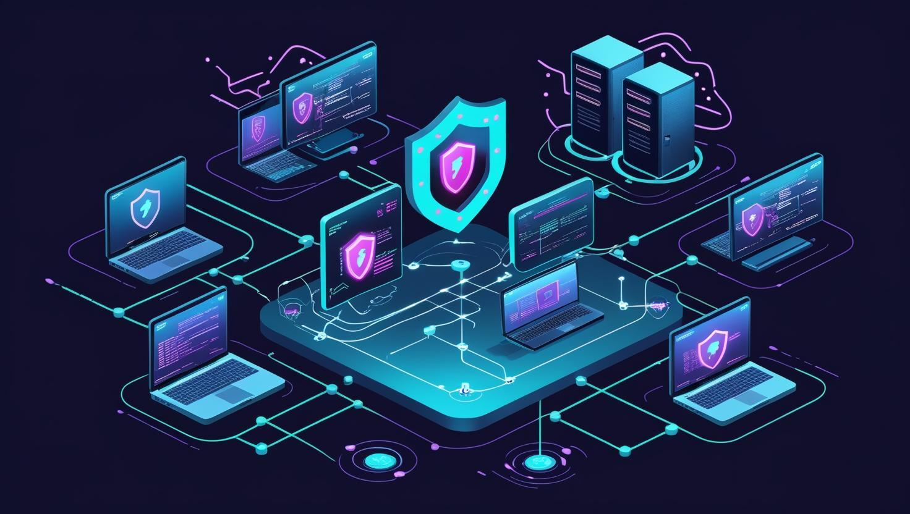

Understanding Cybersecurity
Cybersecurity is the practice of protecting computers, networks, and information unauthorized access and digital attacks.
It is important because people use technology every day to work, shop, and store personal information.

Common Cybersecurity Threats
- Phising: Fake messages that try to steal personal information.
- Malware: Gaining unathorized access to computer systems or accounts.
- Identity Theft: Using someone's personal information without permission.
Why Cybersecurity is Important?
Cybersecurity helps protect personal information, businesses, and important computer systems> Learning about online threats can help people make safer decisions when using technology.